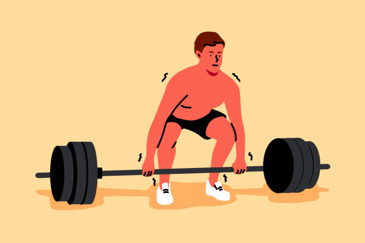

Here is a simple gym routine to follow to start getting into lifting weights for beginners!
By Joe Lee Lombardo
Below you will find an "easy to follow" 3 day schedule for working out to ensure you are maximizing
muscle growth. Another important element to this routine is dieting, but this will be covered later.

Monday (Chest and Triceps)
To start off the week right, lets jump into a good Chest work...
FLAT BENCH (3 sets):
- 1st set: 12-14 reps at a light starting weight
- 2nd set: 12 reps at an increase weight of 5-10lbs
- 3rd set: 10 reps at an increase weight of 5-10lbs
CABLE FLYS (3 sets):
- 1st set: 14-16 reps at a light starting weight
- 2nd set: 12-14 reps at an increased weight of 10lbs
- 3rd set: 10-12 reps at an increased weight of 10lbs
FLAT BENCH DUMBELL PRESS (5 sets PYRAMID):
- 1st set: 14 reps at a medium starting weight
- 2nd set: 12 reps at an increased weight of 5-15lbs
- 3rd set: 10 reps at an increased weight of 5-15lbs
- 4th set: 12 reps at a decreased weight of 5-15lbs
- 5th set: 14 reps at a decreased weight of 5-15lbs
CABLE ROPE TRICEP EXTENSIONS (3 sets):
- 1st set: 16 reps at a medium starting weight
- 2nd set: 14 reps at an increased weight of 5-15lbs
- 3rd set: 12 reps at an increased weight of 5-15lbs
SKULL CRUSHERS (5 sets DROP SET):
- 1st set: 16 reps at a light starting weight
- 2nd set: 14 reps at an increased weight of 5-15lbs
- 3rd set: 12 reps at an increased weight of 5-15lbs
- 4th set: 10 reps at an increased weight of 5-15lbs
- 5th set: REPS TILL FAILURE at the starting weight from the 1st set
Congrats! Your done with your chest and tricep workout!
Tuesday (Back and Biceps)
Lets get into a clean back and biceps workout...
LAT PULL DOWN MACHINE (3 sets):
- 1st set: 14 reps at a medium starting weight
- 2nd set: 12 reps at an increased weight of 10-20lbs
- 3rd set: 10 reps at an increased weight of 10-20lbs
SEATED CLOSE GRIP CABLE ROWS (4 sets):
- 1st set: 14 reps at a medium starting weight
- 2nd set: 14 reps at the same starting weight in set 1
- 3rd set: 12 reps at an increased weight of 20-50lbs
- 4th set: 12 reps at the same increased weight in set 3
BENT OVER BARBELL ROWS (4 sets DROP SET):
- 1st set: 16 reps at a light starting weight
- 2nd set: 14 reps at an increased weight of 5-15lbs
- 3rd set: 14 reps at an increased weight of 5-15lbs
- 4th set: 16 reps at the starting weight in set 1
STANDING SINGLE ARM DUMBELL CURLS (4 sets):
- 1st set: 14 reps at a light starting weight
- 2nd set: 14 reps at the same starting weight in set 1
- 3rd set: 12 reps at an increased weight of 5-10lbs
- 4th set: 12 reps at the same increased weight in set 3
SEATED PREACHER CURLS (4 sets):
- 1st set: 16 reps at a light starting weight
- 2nd set: 14 reps at an increased weight of 5-10lbs
- 3rd set: 12 reps at an increased weight of 5-10lbs
- 4th set: 12 reps at the same increased weight in set 3
NICE! You have completed your back and biceps workout for the day!
Wednesday (Legs)
Today we will focus only on the legs as these types of lifts can be dangerous if you do not lift correctly
with proper form...
- 2nd set: 12 reps at an increased weight of 10-25lbs
- 3rd set: 10 reps at an increased weight of 10-25lbs
- 4th set: 8-10 reps at an increased weight of 10-25lbs
CONVENTIONAL DEADLIFTS (4 sets):
Before we get started, here is a rundown of how to deadlift, please make sure you understand this and do a little
practice before going for the heavy weights!
Well done going through this 3 day workout routine!
There are other days where you can train shoulder, arms, abs, and also focus on cardio. But these 3 days are mainly
to help you get familiar with the main muscle groups for working out and getting into heavy weight lifting! Cardio
as well as dieting are a really important element in working out as well and is always recommended to get into!
Below is a video that goes over dieting and how to get into this area. Dieting is one of the hardest things to follow,
so mastering this element will help you see results extremely fast!
Goodluck in your training and remember: always have good form, maintain a good diet, try to implement cardio as
much as you can, and STAY CONSISTANT!